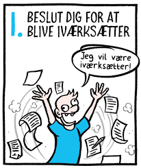
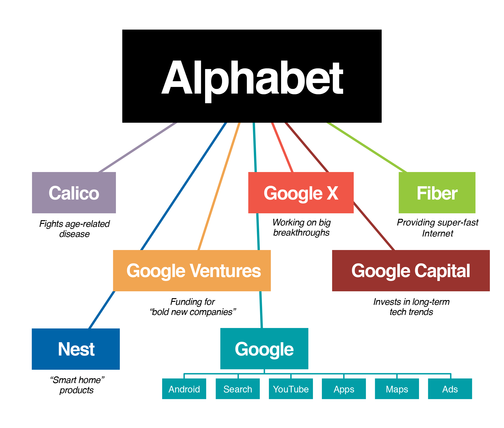

Kapitel 12 Virksomhedsformer og hæftelser

Som studerende skal man være særlig opmærsom på følgende ved gennemgangen af virksomhedsformer:
Regler for virksomhedernes hæftelse i ejendomshandel, ejendomsadministration, bank og realkredit, forsikring samt revision og økonomifunktion i forbindelse med indgåelse af aftaler og kontrakter med kunder og klienter. Overordnet om virksomhedsformer, kapitalkrav og hæftelse (enkeltmandsvirksomhed, ApS, I/S, A/S), SEL § 4 og 5
Lovgrundlaget er selskabsloven, jf. Lovbekendtgørelse 2019-07-23 nr. 763 om aktie- og anpartsselskaber og erhvervsvirksomhedsloven (LEV), jf. Lovbekendtgørelse 2019-07-01 nr. 659 om visse erhvervsdrivende virksomhedern. se lovene i Lovsamlingen klik her!
12.2 Hæftelse - begreber som gennemgås:
Juridisk person.
Fysisk person.
Personlig/ubegrænset hæftelse.
Begrænset hæftelse.
Solidarisk hæftelse.
Pro-rata hæftelse.
Direkte og indirekte hæftelse.
12.2.1 Forskellen på en juridisk person og fysisk person
En “juridisk person” er en organisation, som har selvstændig retsevne, som f.eks. et selskab, en fond eller en forening.
En “forening” er en sammenslutning med en vekslende medlemskreds til opnåelse af et fælles formål af økonomisk eller ideel karakter.
“Fysiske personer” af kød og blod, som et biologisk væsen, anses ikke for juridiske personer.
En juridisk person er en retlig enhed, der opstår af en sammenslutning af personer, fx et selskab, en andelsboligforening, fonde, kommunen, staten, en organisation, et konkursbo eller dødsbo.
En juridisk person har således retsevne, dvs. har evnen til at være part i et retsforhold og agere i retssager.
En juridisk person er adskilt fra enkeltpersoner.
Hæfter for gæld med sine aktiver, fx aktiverne i et aktieselskab.
En fysisk person
Enkeltpersoner.
Hæfter for gæld med deres personlige formue.
12.2.2 Personlig/ubegrænset hæftelse
Det betyder, at man:
Hæfter for samtlige forpligtelser i virksomheden.
Ved personlig hæftelse, stiller man sikkerhed med hele sin personlige formue, dvs. med alt, hvad man ejer og fremtidig erhverver.
12.2.3 Begrænset hæftelse
Det betyder, at:
Skyldneren eller selskabsdeltagerens hæftelse er begrænset til bestemt angivne aktiver eller et pengebeløb, fx i form af sit indskud i virksomheden.
Skyldneren risikerer således kun at miste en del af sin formue, da hæftelsen vedrører et begrænset beløb.
12.2.4 Solidarisk hæftelse
Det betyder:
”Én for alle og alle for én,” fx ved drift af interessentskab (I/S).
Når flere personer driver en virksomhed sammen med solidarisk hæftelse og virksomheden ikke betaler sine regninger, kan kreditor kræve hele gælden betalt af én eller flere af de hæftende virksomhedsejere.
12.2.5 Pro-rata hæftelse
Det betyder, at:
Hver enkelt skyldner hæfter kun for en på forhånd fastsat andel af gældsforpligtelsen.
Man kan kalde det forholdsmæssig hæftelse, hvor hver enkelt skyldner kun er forpligtet til at indfri egen andel af gælden og ikke kan forpligtes til at betale de andres.
12.2.6 Direkte hæftelse
Det betyder, at:
Kreditorer, som har penge til gode, kan rette pengekravet direkte mod selskabsdeltagerne og forlange betaling hos dem, uden først at skulle rette kravet mod selskabet.
12.2.7 Indirekte hæftelse
Det betyder, at:
Kreditorer kan ikke rette kravet direkte mod selskabsdeltagerne, men må først rette kravet mod selskabet.
Viser det sig, at selskabet ikke kan betale, kan kravet så rettes mod selskabsdeltageren, der fx har kautioneret for selskabets kassekredit.
12.3 Virksomhedsformer
12.4 Video om opstart af virksomhed og valg af virksomhedsformer
…
12.4.1 Enkeltmandsvirksomhed

Det betyder, at virksomheden:
Ejes af én ejer, og ejeren tager alle nødvendige beslutninger om virksomhedens drift alene.
Enkeltmandsvirksomheden tegnes af ejeren, men der kan udstedes prokura og fuldmagt til ansatte eller andre, der herefter kan handle og indgå aftaler på virksomhedens vegne.
Eneejeren bærer tabet eller gevinsten alene.
Virksomhedens navn er navneretligt beskyttet, jf. LEV § 6, stk. 2.
Hæftelse: Personligt, ubegrænset og direkte, med alt hvad han eller hun ejer.
Lovgivning: Lov om visse erhvervsdrivende virksomheder: Erhvervsvirsomhedsloven (LEV) (Lovbekendtgørelse 2019-07-01 nr. 659 om visse erhvervsdrivende virksomheder). Erhvervsvirksomhedsloven i Lovsamlingen klik her!
12.4.2 Interessentskab I/S

Dermed menes, at:
Interessentskaber består af to eller flere ejere.
Ejerne hæfter personligt, hvorfor man skal være påpasselig med oprettelse af denne type selskab.
Der er ingen stiftelseskrav ved oprettelse af et interessentskab og det kræver ingen form for startkapital.
Dog kan det være en god idé at udarbejde en interessentskabsaftale parterne imellem - i samråd med en advokat.
Dette for at sikre at reglerne imellem interessenterne overholdes.
Hæftelse i interessentskaber: Det er vigtigt at have en kontrakt med regler, da ejerne af interessentskabet hæfter solidarisk – altså efter ”de tre musketerer princippet”.
At hæfte solidarisk vil sige, at hvis selskabet går konkurs, så har kreditorerne ret til selv at bestemme hvilken ejer de vil hente deres udestående hos.
De kan vælge at hente lige meget fra alle parter, eller hente mere hos den ene end de resterende, hvis denne ene person nu besidder en stor personlig formue.
Generelle krav til et I/S:
Et I/S hører under loven om erhvervsdrivende virksomheder, og skal derfor sørge for at vælge et selskabsnavn, som skiller sig ud fra de eksisterende.
Derudover skal selskabet overholde bogføringsloven.
Om der skal udarbejdes et årsregnskab eller ej, afhænger af om interessentskabet er registreret hos Erhvervs- og Selskabsstyrelsen.
Hvis selskabet er registreret, skal der udarbejdes et årsregnskab, og ellers er det ikke et krav.
Derudover har SKAT også ret til at kræve at et årsregnskab udarbejdes, og så er man nødt til at sørge for det.
Beskatning af interessentskaber:
Beskatningsmæssigt vil den forholdsmæssige andel af interessentskabets indkomst og egenkapital blive beskattet ved opgørelsen af den skattepligtige indkomst i privat regi.
Altså beskattes interessentskaber typisk som personlig indkomst, men kan også beskattes gennem ordninger som virksomhedsskatteordningen eller kapitalafkastordningen.
Definition I/S:
En virksomhed, hvor alle deltagerne hæfter personligt, uden begrænsning og solidarisk over for selskabets kreditorer, jf. LEV § 2, stk. 1.
”En for alle og alle for en”: Interessenterne har hver for sig påtaget sig at hæfte for hele kreditors tilgodehavende, uanset gældens størrelse.
Regres: En interessent som har måttet betale hele kreditors tilgodehavende, har efterfølgende et regreskrav mod de øvrige interessenter.
Ved udtræden/indtræden af I/S, hæfter interessenten kun for den gæld, som interessentskabet havde på udtrædelsestidspunktet/indtrædelsestidspunktet.
Beslutninger: Skal ske i enighed, medmindre andet aftales.
12.4.2.1 Udarbejdelsen af Interessentskabskontrakten
Udarbejdelse af interessentskabskontrakten skal indeholde følgende punkter:
Selskabets navn (i overensstemmelse med LEV § 6).
Selskabets adresse, formål, hjemsted.
Ejerforhold og arbejdsindsats.
Loyalitetspligt, tavshedspligt, konkurrenceklausul, erhvervshemmeligheder osv.
Ledelsesstruktur og beslutninger.
Overskuds- og underskudsdeling.
Kapitalkonti/økonomiske mellemværende med selskabet.
Hæftelse – eksternt solidarisk, men hvad med internt? – pro-rata, regres, hæftelse ved indtræden/udtræden osv.
Overdragelse af ejerandel, salg af andel (internt eller til 3M), overtagelse af andel fra dødsbo.
Opsigelse af partnerskab, samarbejdsumulighed.
Tvister og værneting.
12.4.3 ApS og A/S (kapitalselskaber)

Efter selskabsloven, § 1, stk. 1, jf. Lovbekendtgørelse 2019-07-23 nr. 763 om aktie- og anpartsselskaber, finder loven anvendelse alle aktieselskaber og anpartsselskaber (kapitalselskaber). Selskabsloven i Lovsamlingen klik her!
Det omfatter Bestemmelsen i § 1, stk. 1 angiver selskabslovens anvendelsesområde.
Ikke blot A/S’er og ApS’er, men også partnerselskaber (P/S’er), jf. kapitel 22, er omfattet af begrebet kapitalselskaber.
Andelsselskabet (AMBA’et) er ikke omfattet af selskabsloven.
Den tidligere definition i selskabsloven er udgået og definitionen findes nu i lov om erhvervsdrivende virksomheder § 4.
Det er fundet unødvendigt at medtage en negativ afgrænsning heraf også i selskabsloven, hvor heller ikke andre juridiske personer, der falder uden for selskabsloven (eksempelvis fonde og foreninger) er negativt afgrænset.
*Finansielle virksomheder: er som udgangspunkt omfattet af selskabsloven, men er i øvrigt undergivet omfattende særregulering, jf. især lov om finansiel virksomheder.
Selskabsloven gælder tillige for andre juridiske enheder i kraft af krydshenvisninger fra særlovgivningen, se eksempelvis lov om finansiel virksomhed § 23, hvorefter kapital 3 i selskabsloven med de nødvendige tilpasninger finder anvendelse på gensidige forsikringsselskaber og tværgående pensionskasser.
Udenlandsk indregistrerede selskaber omfattes ikke. En betingelse for selskabets registrering i Danmark er, at dets hjemsted er beliggende her.
Om advokatselskaber og advokatholdingselskaber henvises til Bekendtgørelse nr. 1427 11. december 2007 om advokatselskaber.
12.5 Video Hvad er et holdingselskab?
12.5.0.1 Stiftelse af et kapitalselskab (Aps og A/S):
Hvordan stiftes et kapitalselskab?
I Erhvervsstyrelsen.
Med et stiftelsesdokument, vedtægter, tegning af selskabskapital.
Kontant indskud – kapitalkrav, jf. selskabslovens § 4:
ApS: 40.000 kr.
A/S: 400.000 kr.
Om minimumskapitalkravet i henholdsvis aktie- og anpartsselskaber skal to forhold fremhæves:
- På den ene side kan det ikke heraf uden videre udledes, at ejerne (eller stiftere og ledelse) under alle omstændigheder kan påberåbe sig den begrænsede hæftelse, der er aktie- og anpartsselskabsformens kendemærke ifølge selskabslovens § 1, stk. 2.
Det påhviler nemlig ud over opfyldelse af minimumskapitalkravet stifterne/anpartshaverne (under hensyn til den påtænkte virksomhed) og senere ledelsen (under hensyn til den konkrete økonomiske situation) løbende at vurdere, hvor stor en selskabskapital det konkrete anpartsselskab skal have.
For så vidt angår ledelsen påhviler pligten til løbende at udøve dette skøn forsvarligt af loven:
Kapitalberedskabet skal således til enhver tid være forsvarligt, dvs. stå i rimeligt forhold til selskabets aktiviteter. Ledelsen er personligt ansvarlig for dette forhold.
Pligten er for hvert enkelt relevant ledelsesorgan fastslået henholdsvis i § 115, nr. 5 (som en af bestyrelsens opgaver), i § 116, nr. 5 (som en af tilsynsrådets opgaver), og i § 118, stk. 2 (som en af direktionens opgaver).
“Bestyrelsen” er de personer, som har den overordnede ledelse af et selskab eller en forening. Vælges på generalforsamlingen.
- Det nævnte forhold må på den anden side ikke lede til den misforståelse, at hvis den beholdne egenkapital i et anpartsselskab kommer under minimumskravet, er der indbygget et automatisk ejer- og/eller ledelsesansvar, hvis anpartsselskabets kreditorer lider tab ved dets efterfølgende økonomiske sammenbrud.
Der gælder en lovbestemt reaktionspligt, hvis egenkapitalen i anpartsselskabet kommer under halvdelen af selskabskapitalen, jf. § 119, men der er ingen pligt til at bringe nettoegenkapitalen op på niveau med selskabskapitalen (der består altså ingen retableringspligt), hvis ledelse og ejere overholder det ovenfor beskrevne forsvarlighedskrav.
Bryder anpartsselskabets økonomi sammen, efter at selskabet gennem længere tid ikke har opfyldt minimumskapitalkravet, kan det dog blive en for ejere og ledelse ansvarsmæssigt belastende omstændighed, hvis der har foreligget såkaldt underkapitalisering.
12.5.0.2 Begrænset hæftelse
Apportindskud – indskud af andre værdier end kontanter:
Revisorvurdering af aktiver der indskydes.
Værdien af det indskudte skal minimum svare til kapitalkravet.
Til gengæld for kapitalindskud modtager selskabsdeltagerne:
ApS: Anparter - anpartshaver.
A/S: Aktier – aktionær.
12.5.0.3 Ledelsesstruktur og beslutninger:

Bestyrelse/tilsynsråd og direktion
Generalforsamlingen:
Et kapitalselskabs øverste myndighed.
Kredsen af kapitalejerne træffer beslutning om de overordnede forhold i kapitalselskabet, herunder valg af medlemmer til bestyrelse/tilsynsråd i kapitalselskabet.
“Quorum” betyder det antal medlemmer, der skal være til stede for at en beslutning gyldigt kan træffes på f. eks. en generalforsamling.
Tegningsret:
Dermed menes:
Hvilke personer kan handle og indgå aftaler på kapitalselskabets vegne.
En tegningsudskrift eller et sammenskrevet resumé fra Erhvervs- og Selskabsstyrelsen.
Ejeraftale:
En sådan aftale:
Regulerer det interne forhold mellem kapitalejerne (aktionær- overenskomst/anpartshaveroverenskomst).
12.6 Video om indgåelse af en ejeraftale
12.6.0.1 Selskabskapital

Begrebet selskabskapital, der er defineret i selskabslovens § 5, nr. 30, udgøres af det indskud, som kapitalejernes hæftelse er begrænset til i medfør af selskabslovens § 4, stk. 2.
Garantikapital, hvad enten denne er indbetalt eller ej, er ikke en del af selskabskapitalen.
Ansvarlig lånekapital eller ansvarlig indskudskapital er ikke en del af selskabskapitalen.
Hverken garantikapital eller ansvarlig lånekapital/indskudskapital skal anmeldes til registrering i Erhvervsstyrelsen, men kan oplyses i årsregnskabet i noterne som et samlet tal angivende selskabskapitalen og optaget ansvarlig lånekapital, hvilket så skal ske under en anden betegnelse som f.eks. »samlet ansvarlig kapital«.
Et lån, der er ydet til selskabet på vilkår, at det skal stå tilbage for alle eksisterende og eller kommende selskabskreditorer, skal særskilt opregnes med noteoplysning herom i årsregnskabet, jf. årsregnskabsloven § 93, stk. 3 (der gælder for virksomheder i regnskabsklasse C (mellemstore og store selskaber) og regnskabsklasse D (navnlige statslige og børnoterede aktieselskaber).
En årsregnskabsoplysning om, at låntagerselskabet er rådig over et ansvarligt lån, er et løfte til almenheden om at lånet indestår »indtil videre«.
12.7 Eksamensopgave 12.1.
Om kreditorforfølgning, sikringsakter, grundlæggende selskabsret, hæftelsesformer, prioritetsstillinger, kredtisikring, selskabsformer og hæftelse, mv.
Justesens juristerier

Ivar Justesen er en evig iværksætter og er altid i gang med nye ”erhvervseventyr”, desværre ikke alle lige vellykkede, så derfor har han efterhånden oparbejdet en del gæld. En af hans kreditorer, Sun-Import A/S rykker nu kraftigt for betaling i henhold til en forfalden faktura på kr. 114.870.
Eksamensspørgsmålet:
- Hvilke muligheder – udover konkurs – har Sun-Import A/S for at inddrive det skyldige beløb hos Ivar?
Ivar ejer en nedlagt landejendom, der er belånt langt udover dens værdi. Han har kun almindeligt indbo, men har sidste år arvet et antikt chatol efter sin moster. Et 48” B&O TV er leaset hos Electric City.
Ivars bil har en værdi af ca. kr. 150.000, men den er købt med ejendomsforbehold hos en autoforhandler og der skyldes fortsat 128.000 i den.
I banken har han to indlånskonti – en NEM-konto med et indestående på kr. 2.982 og en konto med et indestående på kr. 79.000, der hidrører fra en arbejdsskadeerstatning, som han fik udbetalt efter en arbejdsulykke for en del år siden.
Herudover har han et depot med en aktiepost i Carlsberg med en kursværdi på ca. kr. 20.000. Hos tre kunder har han nog-le tilgodehavender på i alt kr. 85.000 for levering af varer.
Eksamensspørgsmålet:
- Redegør for hvilke muligheder Sun-Import A/S har for at foretage udlæg i Ivars nævnte aktiver til sikkerhed for deres fordring.
Eksamensspørgsmål:
- Hvilke sikringsakter skal der foretages ved udlæg i aktiverne og hvorfor?
En af grundene til at Ivars landejendom er overbehæftet er dels at han selv for nogle måneder siden optog et banklån mod pant i ejendommen dels at en anden af hans kredito-rer Zync Invest havde foretaget et udlæg.
Ivar havde den 10. maj fået bevilget et lån på kr. 200.000 i sin bank, som dog havde betinget sig at få sikkerhed i et pantebrev på kr. 200.000 i ejendommen med prioritet efter de i forvejen indestående lån.
Alle dokumenter blev udstedt og underskrevet på et møde i banken samme dag. På grund af travlhed fik banken først anmeldt pantebrevet til tinglysning den 13. maj kl. 10.42.
Den 12. maj foretog fogedretten på begæring af en af Ivars kreditorer, Zync Invest, udlæg for kr. 53.000 i ejendommen.
Ivar havde under fogedretsmødet oplyst Zync Invenst om pantebrevet til banken. Udlægget blev tinglyst den 13. maj kl. 10.25.
Eksamensspørgsmålet:
- Hvordan er prioritetsstillingen i ejendommen mellem bankens panteret og Zync Invests udlæg?
Ivar vil gerne starte endnu et erhvervsprojekt op sammen med sin svoger. Men da de er to deltagere overvejer han nu bl.a. på baggrund af råd fra sin revisor, om de i stedet kan starte op i et anpartsselskab.
Eksamensspørgsmålet:
- Hvilke fordele og ulemper kan der være ved at starte den nye virksomhed op i et anpartsselskab?
Ivar har sat familiens gamle sofa til salg på en åben Facebookgruppe ”Ting og sager til salg”. Opslaget indeholder et billede af sofaen og teksten: ”Sofa i meget fin stand sælges. Nypris 9.995. Kan afhentes hos mig efter nærmere aftale i en personlig besked – giv et bud!” Ivar får flere kommentarer og likes på sit opslag. Bl.a. skriver Lonnie Frydenlund: ”Jeg byder kr. 1.800. Hvor bor du?” Ivar sender Lonnie følgende personlige besked: ”Top sofaen er din. Du kan betale kontant eller med Mobilepay, når du henter den. Jeg bor på Løvsangervej 10 i Sundby. Hvornår kan du hente den?” Senere samme dag skriver Lonnie:
”Når du bor så langt væk, vil jeg ikke købe sofaen alligevel. Det er alt for dyrt i transport.”
Ivar mener, at der er indgået en aftale om køb af sofaen, hvilket Lonnie dog nægter.
Eksamensspørgsmålet:
- Tag stilling til, om der er indgået en bindende aftale mellem Ivar og Lonnie.
Podcast om svaret på eksamensopgaven
12.7.1 Koncern
Et moderselskab er karakteriseret ved at selskabet ejer en stor del af aktierne eller anparterne i et andet selskab, som kaldes et datterselskab, jf. selskabslovens § 6.
Hvert selskab inden for koncernen er en juridisk person, som har sit ”eget liv”.
I koncerner hæfter de enkelte koncernselskaber ikke for hinandens forpligtelser. Dette gælder også med hensyn til modregning.
Koncernforbundne selskaber kan indgå aftaler og handle med hinanden på sædvanlige vilkår.
Begreber der er godt at kunne i selskabsretten:
“Corporate governance”: De overordnede principper og strukturer, der regulerer samspillet mellem ledelsesorganerne i et selskab, ejerne og andre, der direkte berøres af selskabets dispositioner og virksomhed.
“CSR” Corporate Social Responsibility: Ved virksomheders samfundsansvar forstås, at virksomheder frivilligt integrerer hensyn til blandt andet menneskerettigheder, sociale forhold, miljø- og klimamæssige forhold samt bekæmpelse af korruption i deres forretningsstrategi og forretningsaktiviteter.
Modsat begrebet “fusion”; samling af flere selskaber taler man om “spaltning” opdeling af selskab i flere selskaber.

12.7.2 Aktieselskaber A/S

Efter selskabslovens § 5, nr. 1 er et aktieselskab et kapitalselskab, herunder et partnerselskab, hvor kapitalejernes indskudskapital er fordelt på aktier.
Aktier kan udbydes til offentligheden.
Kapitalejerne hæfter alene med deres indskud i selskabet.
Kun kapitalsselskabets formue hæfter for kapitalsselskabets gæld og øvrige forpligtelser, jf. også selskabslovens § 1, stk. 2:”
I et aktie- eller anpartsselskab hæfter aktionærerne og anpartshaverne (kapitalejerne) ikke personligt for kapitalselskabets forpligtelser, men alene med deres indskud.
Kapitalejerne har ret til andel i kapitalselskabets overskud i forhold til deres ejerandel, medmindre andet er fastsat i selskabets vedtægter.”
Tilsvarende gælder, at når en kapitalejer har indbetalt sine kapitalandele fuldt ud, jf. selskabslovens §§ 33-34, er kapitalejeren ikke selskabsretligt forpligtet til at tilføre selskabet yderligere kapital.
Udover at kapitalselskabets ejere og ledelse kan ifalde erstatningsansvar efter reglerne i selskabslovens kapitel 22, der i vidt omfang er modelleret over dansk rets almindelige erstatningsreger og omtales i forbindelse med det nævnte kapitels enkelte bestemmelser, kan der tænkes en såkaldt gennembrudshæftelse – som dog er meget sjældent set i praksis, men hvis grundsynspunkt kan føre til hæftelse på objektivt grundlag, altså hvor kapitalejere/ledelse ikke har handlet ansvarspådragende.
Retstilstanden kan for det i praksis mest interessante områdes vedkommende – koncerner/hovedaktionærforhold m.v. – antagelig sammenfattes i et udsagn om, at et moderselskab/en hovedaktionær på objektivt grundlag kommer til at betale en dattervirksomheds gæld, hvis moderselskabet/hovedaktionæren forretningsmæssigt har drevet koncernens selskaber som én virksomhed, hvori ligger, at moderselskabet/hovedaktionæren klart har ladet datterselskabet leve på koncernens goodwill og kreditværdighed, og at driften af datterselskabets virksomhed kun er forretningsmæssig mulig under forudsætning af, at moderselskabet/hovedaktionæren til stadighed tilfører den nødvendige kapital.
Den første danske højesteretsdom om gennembrudshæftelse er U 1997.1642 H. Dommen vedrører gennembrudshæftelse i forhold til et søsterselskab, hvorefter et anpartsselskab hæftede for søsterselskabs gæld til Told- og Skattestyrelsen. Dommen klik her!
“Likvidation” betyder afvikling og opløsning af fx. et solvent aktieselskab.
12.7.3 Anpartsselskab ApS

Efter selskabslovens § 5, nr. 2 er et anpartsselskab, et kapitalselskab, hvor kapitalejernes indskudskapital er fordelt på anparter.
Anpartsselskaber kan ikke udbyde deres kapitalandele til offentligheden, jf. selskabslovens § 1, stk. 3.
Kapitalejerne hæfter alene med deres indskud i selskabet.
Når man stifter et ApS skal man, ifølge selskabsloven, indskyde kr. 40.000 i anpartskapital.
Minimumskravet på 40.000 kr. er fastsat ved L 2019 445, som indebar en nedsættelse fra 50.000 kr. Kravet er tidligere ved L 2013 616 nedsat fra 80.000 kr.
Den seneste nedsættelse af minimumskapitalkravet for anpartsselskaber til 40.000 kr. skal ses i sammenhæng med den samtidige afskaffelse af selskabsformen iværksætterselskab (IVS).
Minimumsbeløbet på 40.000 kr. (dog mindst 25 pct. af selskabskapitalen) skal være indbetalt, jf. § 33, stk. 1, hvilket er en betingelse for, at selskabet overhovedet kan registreres, jf. § 40, stk. 2.
Hvis der indskydes aktiver, kræver disse en vurderingsberetning, der laves af en revisor.
En af de helt store fordele ved at stifte et ApS er, at man har begrænset hæftelse.
Hvis virksomheden går konkurs, mister man kun de 40.000 kroner, man har indskudt i anpartskapital.
Det betyder, at man ikke nødvendigvis skal gå fra hus og hjem, hvis virksomheden går ned.
Et anpartsselskab kan have én eller flere ejere.
Ejerne af selskabet kan være privatpersoner, eller det kan være selskaber.
Ejerandelen af selskabet bestemmes af, hvor stor en del af anpartsselskabets kapital personen eller selskabet har indskudt.
Krav ved stiftelse af anpartsselskab: Ved stiftelsen af et ApS er der visse krav, som skal overholdes:
Det kræves, at der oprettes et stiftelsesdokument, en anpartshaverfortegnelse og en protokol.
Stiftelsesdokumentet indeholder selskabets vedtægter, der fortæller om regler, navn, hjemsted, formål med selskabet og lignende forhold.
Der er et krav om, at selskabet skal ledes af en direktion og/eller en bestyrelse.
Det er direktionen eller bestyrelsen som underskriver årsregnskabet hvert år og dermed påtager sig ansvaret for, at regnskabet er retvisende og udarbejdet korrekt.
Årsregnskabet skal være udarbejdet senest 5 måneder efter regnskabsårets afslutning.
Beskatning af et anpartsselskab:
Anpartsselskabet beskattes for sig, mens man som ansat ejer i selskabet bliver beskattet som almindelig lønmodtager. Et anpartsselskab betaler en selskabsskat af selskabets overskud efter selskabsskattereglerne.
Et anpartsselskab skal udarbejde og offentliggøre regnskabet, der som hovedregel skal revideres af en revisor.
Pligt i forbindelse med bogføringsloven:
Et anpartsselskab er underlagt en pligt om at følge bogføringsloven, dvs. bogholderiet skal udarbejdes efter gældende lov.
Hvis dette ikke overholdes, kan det føre til krav om supplerende oplysninger eller forbehold i årsregnskabet.
12.7.4 Kommanditselskab K/S
Ejerne og hæftelse:
Ejerne i et K/S kan både være virksomheder (juridiske personer) og enkeltpersoner (fysiske personer).
Hæftelse:

Komplementar: Hæfter personligt, uden begrænsning og solidarisk for virksomhedens forpligtelser.
Kommanditist: Hæfter begrænset for virksomhedens forpligtelser og kommanditisten kan ikke miste mere end det beløb der er indskudt i kommanditselskabet.
12.9 Video om Kommanditselskab (engelsk)
12.9.1 Partnerselskab P/S
Kaldes også kommanditaktieselskab.
2 typer selskabsdeltagere:
Mindst én komplementar og mindst én kommanditist.
Kommanditisterne har indskudt kapital, som er fordelt på aktier.
Både fysiske og juridiske personer kan være komplementar i et partnerselskab.
Selskabsformen bruges især i advokatbranchen.
Hæftelse:
Komplementaren hæfter personligt og direkte, og hvis der er flere komplementarer hæfter de solidarisk.
Kommanditaktionæren hæfter begrænset.
Partnerselskabet adskiller sig blandt andet fra et K/S ved at der skal indbetales selskabskapital. Kommanditaktionærerne skal som minimum tegne kommanditaktier for kr. 400.000.
12.9.2 Partrederi og partselskab

Partrederi:
Særligt inden for småskibsfarten, hvor 2 eller flere ejer et skib.
Partrederne hæfter personligt, direkte og pro-rata for partrederiets gæld, dvs. i forhold til deres andel i skibet Partselskab:
Ikke særlig udbredt, men ses dog særligt inden for tidsbegrænsede projekter, fx byggeprojekter, hvor der er et tidsbegrænset samarbejde mellem de involverede håndværkere.
Partselskabsdeltageren hæfter pro-rata med hele sin formue, men kun for sin egen del af selskabets gæld.
12.9.3 Andelsselskab A.M.B.A

Formål: At fremme deltagernes fælles interesser gennem deres deltagelse i virksomheden som aftagere, leverandører eller på anden lignende måde, og hvor virksomhedens afkast fordeles blandt medlemmerne eller forbliver indestående i virksomheden, jf. LEV § 4.
Ses inden for landbrug, indkøbs- og brugsforeninger, vandværk, varme- og elforsyningsselskaber mv.
Hæftelsen i et andelsselskab er ikke lovreguleret. Hæftelsesformen fremgår af selskabets vedtægter.
Oftest er der begrænset hæftelse for ejerne, som er subsidiær eller indirekte, dvs. at kreditorerne først skal have udtømt alle muligheder for inddrivelse hos andelsselskabet, før de kan gå efter andelshaverne.